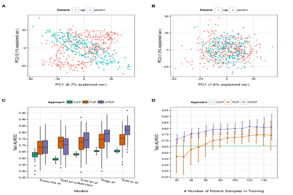

High-throughput technologies facilitated the profiling of large panels of cancer cell lines with responses measured for thousands of drugs. We examine a spectrum of prediction models of patient response: models predicting directly from cell lines, those predicting directly from patients, and those trained on cell lines and patients at the same time. Our integrative models consistently outperform cell line-based predictors, indicating that there are limitations to the predictive potential of in vitro data alone. Furthermore, these integrative models achieve better predictive accuracy and require substantially fewer patients than would be the case if only patient data were available.
link to paper